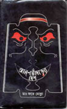

|
Season's
Greeting: aaji
boshonto jaagroto daare (Spring is at the door): By
Shafiq Ahmad
|
When I was in Dhaka, starting
from my boyhood, I used to wait the entire year
in expectation of this day. Rather, more
correctly, in expectation of the first breeze of
the Spring to suddenly caress my body in a
solitary evening street..... ....(Read
more) |
Philosophy: Self
Evaluation: By
Aloka Roy
 |
One thing our socio-cultural
norm avoids like a plague is self evaluation.
Many writers in this forum sound very angry and
frustrated. A mind that is truly liberated may
have its reasons for this frustration, what is
going on around us in Bangladesh, in our
subcontinent as well as in the rest of the world
cannot be reasoned or justified using any
formula but insanity. I often ask myself
...(Read
more) |
Patriotism
- A Rational Perspective: By
Avijit Roy
|
Whenever any context of a
country comes incidentally in our movies,
dramas, story books, novels and especially in
our patriotic songs, it is intentionally
mentioned to brainwash the common people that a
country means its "holy soil",
mountains, rivers or flowers. ...(Read
more) |
My
Perspective on Atheism versus Theism: By
Syed Kamran Mirza
|
Recently in NFB, Mr. K. Rahman
has made several despotic comments that are
utterly ridiculous, unfounded, illogical and
deserve strong rebuttals. Avijit, Aparthib Zaman
and Shabbir Ahmed did splendid job of rebutting
those hilarious logic of Mr. Rahman. Because of
the ridiculous writing style of . . ...(Read
more) |
Religion:
No
Progress Without a Secular Society: By
Taslima Nasrin
|
Every day, women continue to be
victims of rape, trafficking, acid-throwing,
dowry deaths and other kinds of torture. At the
opening of this new century, women are still not
considered as equal human beings in many parts
of the world.... ....(Read
more) |
Why I
remain an Atheist: By
Shabnam Nadiya
|
Early in my teens, I began to
lose my faith. It was a gradual process of
asking myself questions until one day I realized
that religion simply did not make sense to me. I
was a child, and religion – or God – was not
something I had thought much about. Till then,
my experience of religion was to a large extent
similar to other people. It was something that
was just there... ....(Read
more) |
"Ram
Janmma-bhumi" Myth and Hindu fundamentalism: By
Avijit Roy
|
Epic is not a history. Epic is
always fanciful whereas history is plain
informative. So searching historical truth in an
epic is just a mere hypocrisy and disgrace to
its literary value. For such reasons, nobody
look for Greek historical evidences in Homeric
epic Odyssey or Iliad though it is true that the
two epics were written entirely based on . ....(Read
more) |
Who
created you ? : By
Aparthib Zaman
|
Now come to the crux: "WHO
created you?" is NOT the right question. It
does not matter if individually A or B disagrees
with my above assertion. Professional
philosophers, scientists who are employed in all
secular schools supported by tax payers and
private sponsors (ranging form the mediocre to
the top notch) have overwhelmingly reached a
consensus on this... ....(Read
more) |
Does
Quran have any scientific miracles ? : By
Avijit Roy
 |
The fundamentalist Mullahs and
other Islamic "scholars" dogmatically
claim that Quran miraculously predicted many
invention of modern science and all of those
Quranic predictions and myths are flawless. Many
web-pages, books and videos have been produced
by the Islamic apologists proclaiming that some
verses in their scriptures contain super-
scientific facts.Their belief begin to reach to
a firm level when they also find some occidental
charlatan starts talking in favor of their
faith... ....(Read
more) |
Religion
Is Lethal : By
Azam kamguian
|
Friday March 4, 15 pupils burnt
to death in a girl's school in Mecca, Saudi
Arabia. Members of Mutawwia'n, the religious
police appeared at the main gate of the school
and prevented 15 girls escaping the blazing
school building without the Islamic dress; black
clocks (Abaya) and head coverings that are
mandatory for Saudi girls and women. ... ....(Read
more) |
Does God
Really Exist ? : By
Aparthib Zaman
 |
There are always a lot of
debates and discussions in various e-forums on
this topic, some of those contain a lot of
verbiage. But unfortunately those really did not
succeed in making any clear case, as far as
proving the existence of God, or refuting any
argument against the claim of God's existence.
No surprise, as that's how it has been for
centuries.... ....(Read
more) |
Obituary: Celebrating
a Friend on Pohela Boishakh : By
Asif Saleh
|
Today is Pohela Boishakh. For
the past six years, I greet the New Year with
melancholy, for this was the day when a dearest
friend once celebrated his birthday. For the
past six years I have no way to communicate my
good wishes to him from this world. Rafi's
introduction to me was back in the days when I
was living in Lalmatia and ....(Read
more) |
Ahmad
Sofa : The death of an iconoclast : By
Alam Khorshed
|
Ahmad Sofa (1943-2001), the last
bastion of hope and honesty in the fast
degenerating intellectual arena of Bangladesh,
has breathed his last. Thus came to an end,
rather abruptly, an extraordinarily eventful
life of a supreme creative genius, an unabashed
altruist and an undaunted warrior against all
forms of injustice and hegemony. ....(Read
more) |
Literature:
The Portrait and
Poem of a Poets: By
Dr. A. H. Jaffor Ullah
 |
Rabindranath Thakur, the
celebrated Bengali poet, short-story writer,
song composer, playwright, essayist, and
painter who was awarded the Nobel Prize for
Literature in 1913. He introduced new prose
and verse forms and the use of colloquial
language into Bengali literature, thereby
freeing it from traditional models based on
classical Sanskrit. He was highly influential
in introducing the best of Indian culture to
the West and vice .... (Read
more)
|
Those Alluring
Poems of Jibanananda Das : By
A.H. Jaffor Ullah
|
Poems of Jibanananda Das have
special meaning to all of us who are living in
an alien land faraway removed from Bengal. The
sensation that I get reading poems from Ruposhi
bangla or Bonolata Sen cannot so
easily be described through writing alone. How
one could possibly describe his or her mood or
emotion? As I am gracefully growing older,
Jibanananda Das's poems are creeping into my
mind. The joy that I get upon reading his
fascinating poems ... ... ....(Read
more) |
September
11:
An Elegy for New
York and Joan Miro: By
Alam Khorshed
|
I lived in New York for seven
lucky years and loved every bit of it, so much
so that I am now scared to revisit her for
it's landscape has changed forever! I shared
for sometime a serene household in an island
called Staten on the other side of the East
River with a die-hard India lover American
dropout named Jonathan, we used to fondly call
Janardan, and a Japanese girl Umiko with her
furry feline .... (Read
more)
|
Diary of a Broken
Spirit: By
Asif Saleh
|
Staying inside the apartment
has become too claustrophobic. My favorite
little cozy apartment is just strangulating me
with the TV coverage and the non-stop phone
calls. No matter how much I try to lift up
myself, the ghost of World Trade Center
won’t leave me. It’s been three days that
I am stuck at home unable to go to work. .... (Read
more)
|
Book
Review The
Inconsequential Politician : Reviewed
by Dana De Zoysa
|
The
Inconsequential Politician
by Sylvia Mortoza |
During the 19th and early 20th
centuries, certain intellectual but romantic
Westerners became much taken with "Orientalism."
What started as a sophisticated adoration of all
things Asian has evolved into unsophisticated
middle-class hippieism seeking ashram
enlightenment or the perfect rave at Vagator
Beach in Goa.Few have taken the trouble to live
there long enough to discover that Asia is not
so much superior as muddling through pretty much
like the rest of us.. ... ....(Read
more) |
Al-Bho(n)dorer
Desh : Reviewed
by Professor Ajoy K. Roy
|

Al-Bho(n)dorer
Desh
by Fatemolla
|
I got hold of your book "Al
Bho(n)darer Desh" and gone through it some
time back [September]. As per your request I
wanted to write up a review of it. But so many
things are happening I couldn't keep pace with
time. Now I realize it will take more time to do
so- may be I will not be able to do so at all. I
therefore decided to make tit bit comments on
your book and post it to [Mukto-Mona] forum, of
course if you permit, now and then.I like your
style of writing. You have a rare capability of
presenting ....(Read
more) |
Gandhi's
Passion : Reviewed
by Bapsi Sidhwa
|
Gandhi's
Passion
by Stanley Wolpert
|
I got hold of your book "Al
Bho(n)darer Desh" and gone through it some
time back [September]. As per your request I
wanted to write up a review of it. But so many
things are happening I couldn't keep pace with
time. Now I realize it will take more time to do
so- may be I will not be able to do so at all. I
therefore decided to make tit bit comments on
your book and post it to [Mukto-Mona] forum, of
course if you permit, now and then.I like your
style of writing. You have a rare capability of
presenting ....(Read
more) |
Wollstonecraft
and her passion : Reviewed
by Renata Golden
|
Mary
Wollstonecraft : A Revolutionary Life
By Janet Todd
|
ABOUT her first published work,
Thoughts on the Education of Daughters, Mary
Wollstonecraft said, "I felt what I
wrote!" Indeed, her writings reveal an
evolution of her feelings, from belief in moral
absolutes to support for the independence of
women to a grudging concession that life grows
more complex as reality erodes idealism. Wollstonecraft
wrote Thoughts in 1787 when she was 27 and
running a school in Newington Green, near
London. ....(Read
more) |
Why I am
not A Muslim : Reviewed
by Taslima Nasrin
|
Why
I am not a Muslim
By Ibn Warraq
|
In the wake of the Rushdie
Affair, a report in the New York Times (Feb. 27,
1989) voiced a common fear: "Ayatollah
Khomeini has probably succeeded in preventing
publication in this country of books critical of
Muslims & Islam". This prophecy has
proved, fortunately wrong, witness the writings
of Anwar Shaikh that have earned him a fatwa
from the mullahs in Pakistan, or Dr. Morey's The
Islamic Invasion (1992). Now we have the
courageous work of Ibn Warraq, Why I am not A
Muslim, first published in the USA in 1995.. ....(Read
more) |
Poems The
freethinkers of "Mukto-mona" have also
poetic mind inside ! Many of them are excellent poet by nature ~
ONE NIGHT
Dr. Audrey
Manning
©Audrey Manning 1997
Outside the
rain hits the window;
Inside I am all alone.
It scurries across the floor,
Sensing the unclaimed prize.
Removing the carcass
Is expected to be an easy task,
For Winter’s bitter wind is very near.
But, tugging, pulling, surveying
Does not produce the desired results.
Perhaps an army would have the answer!
The army marches in one by one.
They survey, pull, tug
And slump away daunted.
Would it accept defeat?
Once more it surveys the prize.
Suddenly, it begins to dissect the fly
And carry away the pieces, bit by bit.
'And Ladies of the Club’
Arrive for their meeting.
Cold hands are shaken;
Meaningless words are spoken.
The guest speaker walks across the floor,
In bare feet. . . . . . .
“O, my God! There’s an ant!”
Another foot, still clad,
Is raised and dropped. . .
It was but a nanosecond
In the march of time!
Read
more poems from mukto-mona members...
|